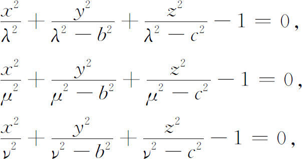
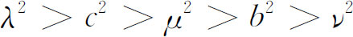
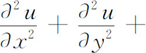

5．曲线坐标
格林引入了许多主要的概念，其意义远远延伸到位势方程以外。最先关注热方程的数学家兼工程师拉梅（Gabriel Lamé，1795—1870）引入了另一个主要的技巧，即使用曲线坐标系，它也可以用于许多类型的方程。拉梅于1833年(14)指出，热方程仅对那些表面垂直于坐标平面x＝常数，y＝常数，z＝常数的导体是解出来了。拉梅的想法是引入新的坐标系和相应的坐标面。在非常有限的程度上说，这事已由欧拉和拉普拉斯做过了，他们两人使用了球坐标ρ，θ，ø，在这情况下，坐标面ρ＝常数、θ＝常数、ø＝常数分别是球面、平面、锥面。知道了从直角坐标变换到球坐标的方程，人们就能像欧拉与拉普拉斯所做的那样，把位势从直角坐标变换到球坐标。
新坐标系和坐标曲面的价值是双重的。第一，在直角坐标系中，一个偏微分方程可能不能分离成这坐标系中的常微分方程，但在另一坐标系中可能是可分离的。第二，物理问题可能需要一个，比如说，椭球上的边界条件，这样的边界在有一族以椭球面组成坐标面的坐标系中可以简单地表示出来，而在直角坐标系中必须用相当复杂的方程。此外，在所采用的适当的坐标系中经变量分离后，这个边界条件变成恰好可应用于所得常微分方程中的一个方程。
为了在新坐标系中解热方程的特殊目的，拉梅引进了几个新的坐标系(15)。他的主要坐标系是三族曲面，由下列方程给出：

其中

。这三族曲面是椭球面、单叶双曲面和双叶双曲面，它们全都具有相同的焦点。一族中的任一曲面垂直地交割所有其他两族中的曲面，而实际上是在曲率线上交割它们的（第23章第7节）。因此空间中任何点有坐标（λ，μ，ν），即每族中经过该点的曲面的λ，μ和ν。这个新坐标系叫做椭球面的，虽然拉梅曾称它为椭圆的（这一术语现已用于另一种坐标系了）。拉梅把稳态情形（即温度不依赖于时间）的热方程，即位势方程，变换到这些坐标系，并指出他能用变量分离法把偏微分方程划归为三个常微分方程。当然这些方程必须在适当的边界条件下求解。拉梅在1839年(16)的一篇论文中进一步研究了在三轴椭球体中稳态的温度分布，并对他1833年论文处理的问题给出了一个完全解。在这1839年的论文中他又引进了另一个曲线坐标系，现在称为球锥系，其中坐标曲面是一族球面和两族锥面。拉梅还用这坐标系解过热传导问题。拉梅用椭球坐标写了许多关于热传导的论文，连同1839年的第二篇论文包含在同一卷《数学杂志》内，在其中他处理了椭球体的一些特殊情形(17)。
互相正交的曲面族的课题，在偏微分方程的求解中有如此明显的重要性，以至对它本身或它内部的问题的研究已成为一个主题。在1834年的一篇论文(18)中拉梅考虑了任何三族互相正交的曲面的普遍性质，给出了一个沿用至今的技术：在任何正交坐标系中表示偏微分方程的程序。
海涅［（Heinrich）Eduard Heine，1821—1881］沿着拉梅的思路前进。海涅在他1842年的博士学位论文中(19)，不仅确定了旋转椭球体内部的（稳态温度）位势（当位势在表面的值已给出时），而且还确定了这种椭球体外部的和两同焦旋转椭球面之间的壳体的位势。
拉梅对他和别人用相互正交的坐标系所完成的事有如此深刻的印象，以至认为所有的偏微分方程都可能通过寻找适当的坐标系求解。后来他认识到这是一个错误。1859年他出版了一本论整个课题的书———《曲线坐标讲义》（Leçons sur les coordonnées curvilignes）。
虽然把三族互相正交的曲面用作坐标曲面不能解决所有的偏微分方程，但确实开辟了一个新技术，在许多问题中能表现其优越性。曲线坐标的使用已移植到其他偏微分方程。例如，马蒂厄（Emile-Léonard Mathieu，1835—1900）在1868年的一篇论文中(20)，处理一个椭圆薄膜振动问题，其中涉及波动方程，这里他引入了椭圆柱坐标，相应于这些坐标的函数，今称为马蒂厄函数（第29章第2节）。在同一年海因里希·韦伯（Heinrich Weber，1842—1913）研究方程

k2u＝0时(21)，对由完整椭圆所围成的区域解出了它，同时也对由两个同焦椭圆弧和与椭圆弧同焦的两个双曲弧围成的区域解出了它。在椭圆和双曲线变成同焦抛物线的特殊情形也被考虑过，这里海因里希·韦伯引进了在这坐标系中便于展开的函数，今称为韦伯函数或抛物柱函数。马蒂厄在他的《数学物理教程》（Cours de physique mathématique，1873）中，讨论了包含椭球体的新问题，并引入了其他更新的函数。拉梅所开创的想法，即用曲线坐标的想法，还只是描述了这一工作的开端。许多其他的坐标系已经导入，用变量分离法引出的常微分方程，求解时得到的相应的各种特殊函数也已研究过了(22)。特殊函数的这个理论的大部分，是由物理学者在具体问题中，当他们需要这些函数及其性质时所创立的（亦可见第29章）。